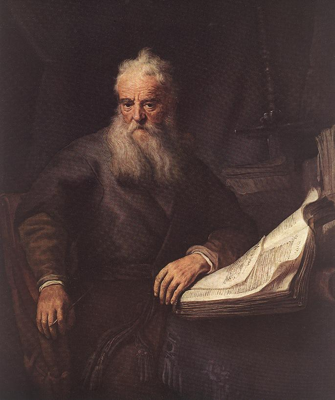

I A Man of Three Worlds
Before he was Paul, he was Saul — a name he likely carried after Israel’s first king, of his own tribe of Benjamin. He stood at the meeting point of three worlds: a devout Jew, a citizen of a Greek city, and a Roman by legal right. That unusual combination would later make him uniquely suited to carry the gospel across the empire.
He was born in Tarsus of Cilicia, a prosperous city in what is now southern Turkey, known for its schools and trade (Acts 21:39; 22:3). He was a Roman citizen by birth — a status that gave him legal protections he would invoke more than once (Acts 22:25–28).

II A Pharisee’s Pharisee
Paul described his own pedigree with precision. He was “circumcised on the eighth day, of the people of Israel, of the tribe of Benjamin, a Hebrew of Hebrews; as to the law, a Pharisee” (Philippians 3:5). He trained in Jerusalem under Gamaliel, one of the most respected rabbis of the age (Acts 22:3).
“I advanced in Judaism beyond many of my own age among my people, so extremely zealous was I for the traditions of my fathers.” Galatians 1:14
He also worked a trade — tentmaking — which later let him support himself rather than burden the churches he served (Acts 18:3).
III The Persecutor
Saul’s zeal turned violent toward the followers of Jesus. He first appears in the New Testament at the stoning of Stephen, the church’s first martyr, guarding the coats of those who threw the stones and approving of the killing (Acts 7:58; 8:1).

From there he became the chief hunter of the church, “ravaging the church, and entering house after house, he dragged off men and women and committed them to prison” (Acts 8:3). He later confessed this without flinching:
“I persecuted this Way to the death, binding and delivering to prison both men and women.” Acts 22:4 · see also 1 Corinthians 15:9; 1 Timothy 1:13